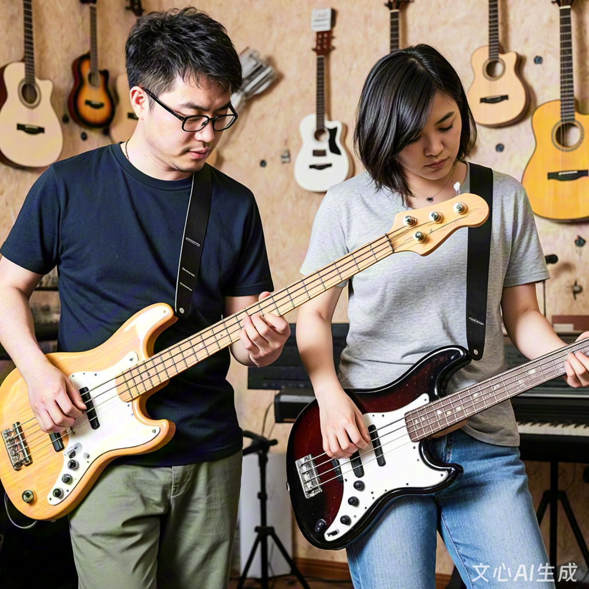

校园贝斯社 2025 年招新
社团简介 |
活动安排 |
风采展示 |
社员故事 |
在线报名
一、贝斯社简介
校园贝斯社成立于 2016 年，是全校唯一专注电贝斯与低频文化的社团。
我们每周组织 slap、fingerstyle、即兴合练，不定期邀请职业乐手开设大师课。
无论你是零基础，还是已经能稳稳卡住 16 分音符，只要对低频律动有热情，这里就有你的舞台。
返回顶部
二、本学期主要活动安排
| 贝斯社 2025 年春季学期活动安排表 |
| 活动名称 | 活动时间 | 活动地点 | 负责人 |
| 新成员见面会 |
3 月第 2 周 周五晚 |
学生活动中心 B201 |
老魏 |
| 贝斯基础教学公开课 |
3 月第 3 周 周六下午 |
阿杰 |
| “低频派对”操场 Jam |
4 月第 2 周 周日 |
东侧草坪 |
贝贝 |
| 期末 Groove 专场 |
6 月第 1 周 周六晚 |
大礼堂 |
社长 |
返回顶部
三、贝斯社风采展示
点击图片查看详细活动介绍

宣传视频：